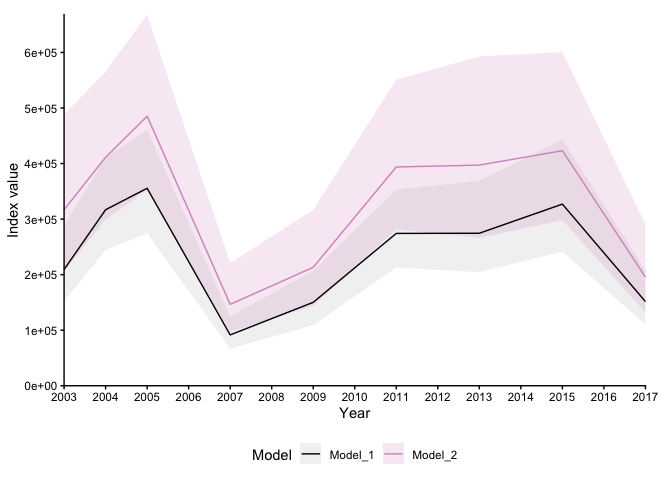
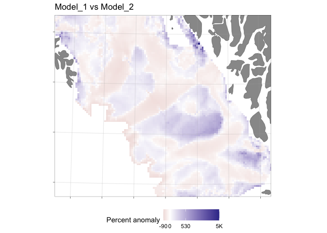

sdmTMBexperiments is a collection of experimental helper functions for working with fitted sdmTMB models: model comparison, mesh-resolution sensitivity, retrospective analysis, survey-specific index comparison, prediction-grid construction, and diagnostic plotting. It doubles as a showcase of how to use these functions and a staging ground for methods that may later be adopted into sdmTMB.
The functions may be freely reused. Figures are made using ggplot2, and can be modified using ggplot syntax. Maps are drawn on ggOceanMaps basemaps. The functions in this package are experimental and likely contain bugs. If you spot one, please file an issue or commit a PR.
📖 Documentation and full walkthrough — start with Get started for an end-to-end example, or the function reference for individual functions.
Installation
# install.packages("remotes")
remotes::install_github("DeepWaterIMR/sdmTMBexperiments")Example
library(sdmTMBexperiments)
#> Loading required package: ggOceanMaps
#> Loading required package: ggplot2
#> ggOceanMaps: Using ~/Documents/ggOceanMapsLargeData as data download
#> folder. This folder is customly defined and does not require
#> downloading the detailed map data again.
library(sdmTMB)
mesh <- make_mesh(pcod, c("X", "Y"), cutoff = 20)
m1 <- sdmTMB(
density ~ 0 + as.factor(year),
data = pcod,
time = "year",
mesh = mesh,
family = tweedie()
)
m2 <- sdmTMB(
density ~ 0 + as.factor(year) + depth_scaled,
data = pcod,
time = "year",
mesh = mesh,
family = tweedie()
)
nd <- replicate_df(qcs_grid, "year", unique(pcod$year))
# Compare two models: indices, spatial prediction differences, Mohn's rho
cmp <- compare_models(m1, m2, newdata = nd, object_crs = 32609)
#> ℹ `ln_tau_O` is an internal parameter affecting `sigma_O`
#> ℹ `sigma_O` is the spatial standard deviation
#> ℹ `ln_tau_E` is an internal parameter affecting `sigma_E`
#> ℹ `sigma_E` is the spatiotemporal standard deviation
#> ℹ `ln_kappa` is an internal parameter affecting `range`
#> ℹ `range` is the distance at which data are effectively independent
plot(cmp)
plot(cmp, type = "spatial")
This is only a taste of what’s available — see the Get started vignette for the full walkthrough: retrospective analysis, mesh-resolution sensitivity, diagnostic plots, prediction grids, and survey-specific index comparison with the bundled sebastes data.
Citation
The functions can be freely reused in sdmTMB development. If you use these functions, please cite the function developer (Mikko Vihtakari, Institute of Marine Research). If you use the package in publications, please cite it:
citation("sdmTMBexperiments")
#> To cite package 'sdmTMBexperiments' in publications use:
#>
#> Vihtakari M (2026). _sdmTMBexperiments: Experimental Helper Functions
#> for 'sdmTMB'_. R package version 0.1.3,
#> <https://github.com/DeepWaterIMR/sdmTMBexperiments>.
#>
#> A BibTeX entry for LaTeX users is
#>
#> @Manual{,
#> title = {sdmTMBexperiments: Experimental Helper Functions for 'sdmTMB'},
#> author = {Mikko Vihtakari},
#> year = {2026},
#> note = {R package version 0.1.3},
#> url = {https://github.com/DeepWaterIMR/sdmTMBexperiments},
#> }